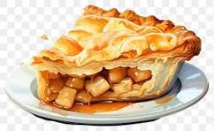

Apple Pie
Home

Description
Donna's famous apple pie is a delicious dessert. It uses a variety
of apple types to create a complex flavor profile.
Ingredients
- 3/4 Cup Sugar
- 1/4 Cup Flour
- 1/2 Tsp Nutmeg
- 1/2 Tsp Cinnamon
- Dash Salt
- 6 Cups Apples, Thinly Sliced
- 2 Tbsp Butter
Directions
- Heat Over to 425F
- Prepare Pastry
- Stir together sugar, flour, nutmeg, cinnamon and Salt
- Mix with apples
- Turn into pastry-lined pie pan
- Dot with Butter
- Cover with top crust which has slits in it
- Seal and flute
- Cover edge with 2-3" strig of aluminum foil last 15 min of baking
- Bake 45-50 min or until crust is brown and juice begins to bubble through slits in crust